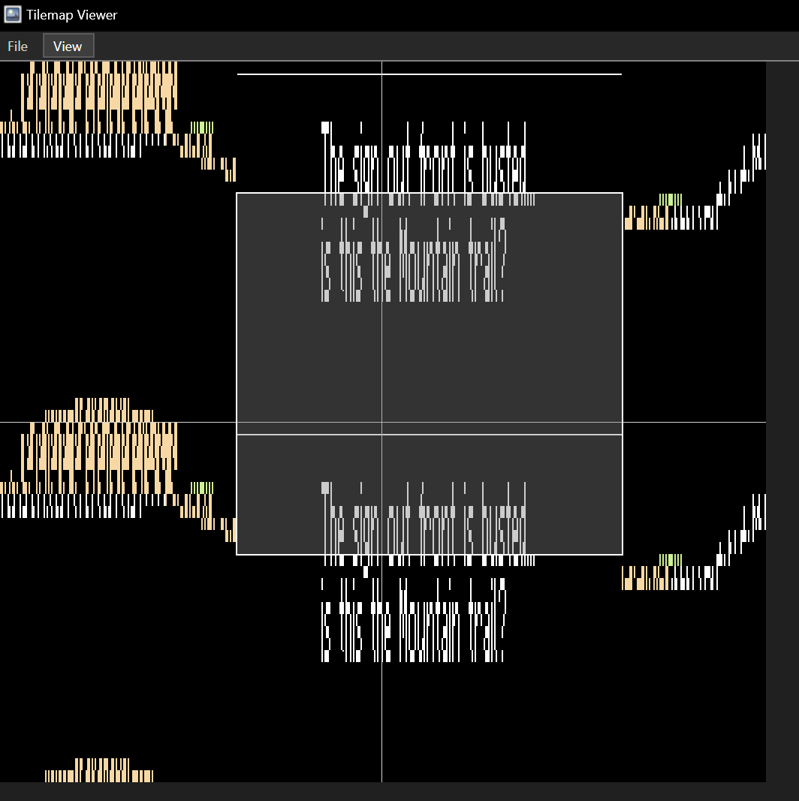

Drawing Variable Width Fonts using CHR-ROM
This is the first of a few articles detailing exactly what I have been doing to pull off certain tricks in CelesteNES.
Background
After a few days of thinking how I'd do the dialogs in this game, I realized that there is text that I might need to split up into several dialog boxes, which I found undesirable. So I started to look for ways I could, maybe, render variable width fonts.
Why not just use CHR-RAM?
The main reason I decided against using CHR-RAM is because it would leave less space available for the rest of the game. And I kind of need that space. Remember, Celeste (excluding Farewell) has about 500 rooms (and that's just the normal chapters! I do not plan on recreating the B- or C-sides.)
Most of PRG-ROM would be taken up by levels. Even if I managed to reach a 10% compression ratio on all the graphics (which is unlikely given that Celeste's graphics are actually pretty detailed), I'd still have a hard time fitting all that in.
Why not just use 8x8 characters?
I also decided against using a monospace 8x8 font because, well, the NES' tile resolution is small (only 32 tiles in a line), and the portrait would take up like 5 characters, as well as the edges which would be 2 characters each. Leaving me with only 25 characters per line. Some of Celeste's dialog uses more than that, and on both lines! And some has really long text on all three lines. Here's an example of the latter:
See, 30, then 42, then 30 characters. I'd never be able to fit this using normal 8x8 fonts in a single dialog! Sure, I could split it into two, but that's no fun.
Celeste Mario's Zap & Dash!
Celeste Mario's Zap & Dash! is a "ROM hack" of the original Super Mario Bros. 1. (Ok, it's pretty much a rewrite at this point, let's admit it.)
One feature it includes is dialog. And you can guess what it does.
That's right. It uses variable width fonts.
Now, how exactly does it do this. You may have a couple ideas in mind.
CHR-RAM?
You might think it's CHR-RAM. Let's look at the beginning of the file in a hex editor:
000000: 4E 45 53 1A 10 10 52 00 00 00 00 00 00 00 00 00 80 | NES...R..........
This is CMZND's iNES header. See the NESdev Wiki article about it. You can immediately see that offset 5 (CHR-ROM size) is not zero. Therefore, this game has CHR ROM installed. You will also want to look at offset 11 (the CHR RAM size), and you'll see that it is zero. Therefore there is no CHR-RAM installed.
Sprites?!
Nope! The NES, notoriously, has an 8 sprite per scanline limit. So, obviously, you can't draw a whole dialog. (I'm actually constantly fighting this very limitation myself, but in other parts of the game!)
If none of these, then what?
The Raster Tricks
Here is a screenshot of the Event Viewer in Mesen, with CMZND opened and a dialog being shown in-game.
Notice all these blue writes next to the one I highlighted? Those update the PPUADDR register ($2006).
Some of the writes above seem to have to do with the mapper, but I didn't look too deep into the MMC5
mapper that it uses so I wouldn't know.
The writes that you can see after the frame ended are only to update the HUD, from what I can tell.
It constantly writes $00 to $5104 (Internal ExRAM mode) and $AA to $5105 (Nametable Mapping).
(See the NESdev Wiki article about MMC5.) I don't know why it isn't
just configuring it once and screwing off, but I digress.
The point is, the PPUADDR is updated every line during horizontal blank. (While rendering that actually
does all sorts of things, but one of those is the coarse Y which this adjusts.)
Here is another screenshot of the tile map at the moment when those scanlines are rendered.
This is a binary counting pattern stretched along the Y axis.
And if you couldn't guess, here's what the CHR bus for background rendering looks like during the dialog:
So, basically, it uses these tiles to render text that would otherwise be impossible on the NES without CHR-RAM. Neat!
Caveats
In Celeste Mario's Zap & Dash!, the dialog is drawn to separate ExRAM, and switched to at the moment when the dialog is supposed to be drawn. My game does not have that. It has nowhere near the advancement level of MMC5, actually.
Still, this was too cool to pass up, so I ended up borrowing the method for my own use.
How does it look in-game?
Like this! Ain't it nice?!
Here's a screenshot of the event viewer:
It actually looks pretty different, however, the idea is still the same, so it counts. But what am I doing?
Let's start with the differences:
I use the split X/Y scroll method instead of overwriting PPUADDR. Because I can. And because of a game design quirk where sometimes, the level may be split vertically across two nametables (ok, really, it's just one nametable, but half of the level is on the top, and the other on the bottom). I want to override the Y scroll to the origin of the dialog, as well.
I don't have ExRAM, so I simply push the dialog to unused nametable space. This makes the dialog routines considerably more complex since I will have to handle nametable wraparound.
Case in point: 
The attribute table has been cleared to fully-white, so the text isn't colored. I could do that, but it'd be limited to rows, as I risk accidentally coloring other characters as well.
I don't know if CMZND does this too, but I reschedule the IRQ a few lines after the dialog line finished rendering to fend off potential misalignments caused by DPCM read cycles. This is a real and visible problem now that ButterSoap, our music composer, has added DPCM samples to his cover of First Steps. Yes, my tightly timed loops will be misaligned, but not so badly as to cause visible glitches.
Obviously, I draw the text at the top, instead of the bottom, though I might add that feature in later. Chapter 3 of Celeste in particular uses dialog boxes on the bottom, because placing them above would obscure important parts of the story.
The main principle is the same as in Celeste Mario's Zap & Dash!, though.
Drawing
Ok, but how much space does this take up?
Well, of course, one whole nametable. That much is clear. It also uses an extra 768 bytes of RAM, to store a 256X24 1bpp bitmap. Writes to this bitmap (e.g. when a letter appears) are mirrored to the specific nametable where the byte resides. (Yes, I really do write 8 bytes per 8x8 block of pixels updated)
A potential nicety?
Most of the space in my counting pattern is actually unused. That's because, for each line, I just
scroll to the top of the tile. Therefore, the rest is never visible. I actually use this for the
$FF tile - I can reuse it as a border, after clearing out most of the tile, leaving only the top
filled in with pixels.
However, because I can't control the top row of tiles, I'm not sure how useful this would actually be.
Conclusion
This nice raster trick allows me to use variable width/proportional fonts while using CHR ROM, allowing me to keep my (relatively) fast loading times and use as much PRG-ROM space for levels.
There are so many limitations with the NES, but I'm trying to fight off each one of them to produce the best experience that I can.